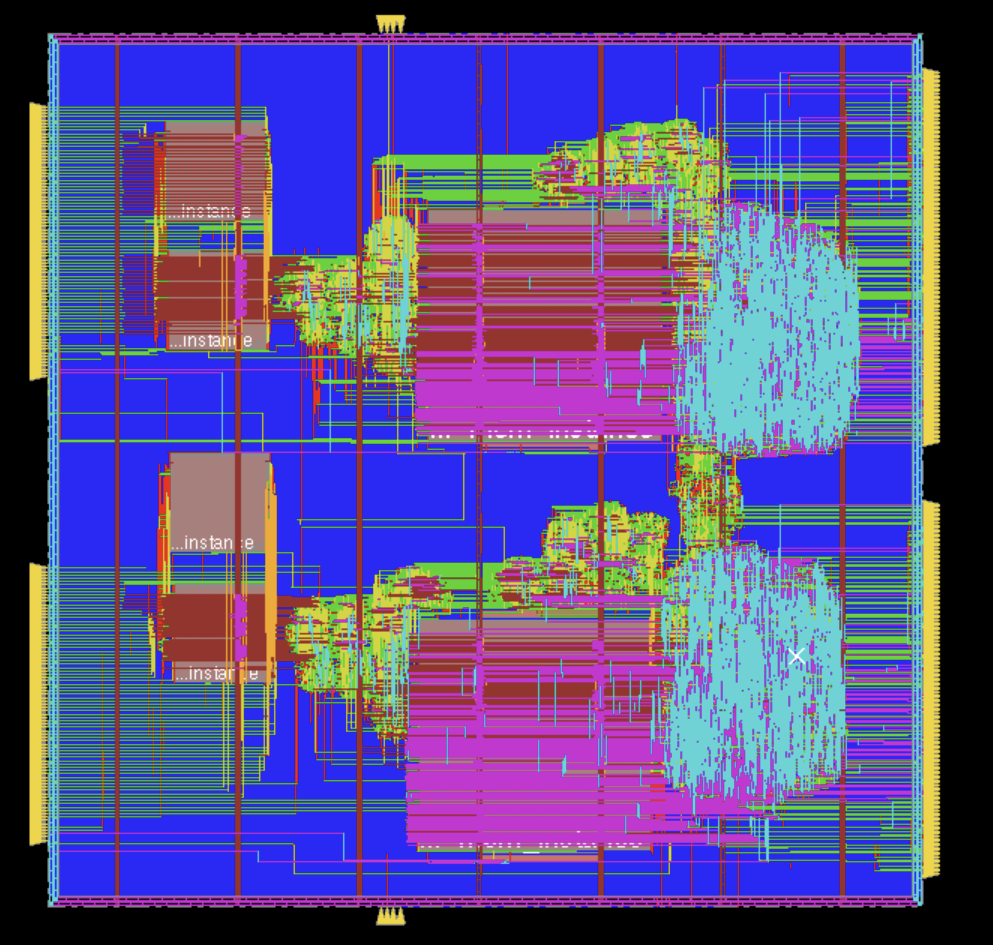
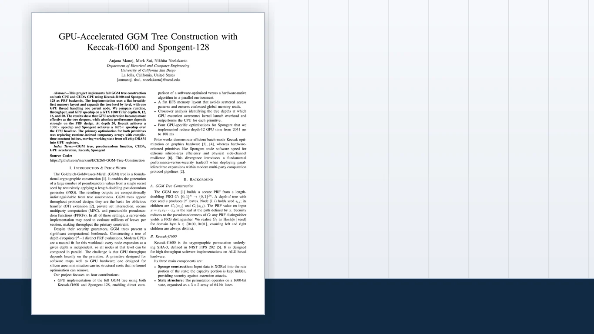
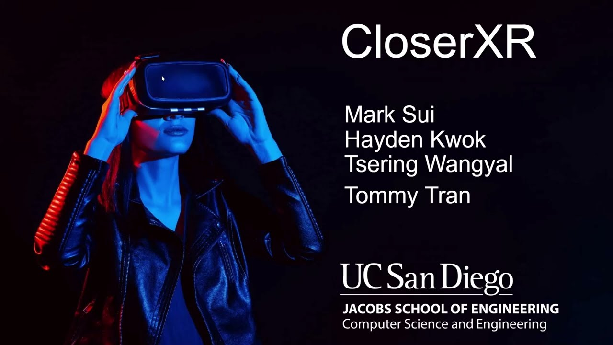

Dual-Core ML Accelerator
Team INT8 attention accelerator with SRAM-backed MAC arrays, asynchronous sum exchange, and normalization. Compare the reported timing, power, and area tradeoffs.
INT8Async FIFOSRAMTeam project
Selected Work
Explore RTL systems, implementation results, and supporting software. Each project brings its case study, source, and reports together.
15 projects across hardware, tools, and software.
RTL implementation, verification, and measured engineering results.

Team INT8 attention accelerator with SRAM-backed MAC arrays, asynchronous sum exchange, and normalization. Compare the reported timing, power, and area tradeoffs.
An 8-state decoder with BMC, ACS, banked survivor memory, and traceback. The report records 22 error-injection cases, including successful recovery and failure cases.

Extended a multi-agent Verilog generation flow with failure routing, route-specific repair prompts, edit acceptance guards, and task-local debugging memory.
LLM-generated RTL can compile, simulate, and still fail from interface, timing, or behavioral mismatches.
Classified failures into syntax, interface, logic, or ambiguous routes and preserved candidate checkpoints per task.
Routing cut estimated cost and runtime by 3.9%; memory raised full-set raw passes from 138/156 to 141/156.
The report frames routing as an efficiency control and memory persistence as the stronger correctness signal for future combined experiments.

Team CUDA cryptography project for GGM tree construction. My contribution focused on integrating Spongent and Keccak backends.
GGM trees need millions of PRF evaluations, making throughput the bottleneck for protocol-scale workloads.
Used a flat breadth-first memory layout and one GPU thread per parent node to expand levels in parallel.
Keccak reached 202M leaves/sec at depth 20; Spongent GPU time dropped from 2041 ms to 108 ms at depth 12 after optimizations.
The report compares software-friendly Keccak with hardware-native Spongent, showing why relative speedup and absolute throughput tell different performance stories.
Interactive tools and native utilities.

Browser tool for Boolean logic, truth tables, K-maps, simplified equations, Verilog, and static CMOS pull-up / pull-down schematics.
Logic classes often split truth tables, K-maps, Verilog, and transistor reasoning into separate tools.
One browser studio connects Boolean input to simplified equations, generated HDL, and static CMOS views.
Shows hardware reasoning across abstraction layers instead of stopping at a polished interface screenshot.
The project emphasizes traceability between Boolean input, minimized logic, generated Verilog, and static CMOS structure.

Local-first interview practice app with a large question bank, mock rounds, review history, progress analytics, and JSON import / export.
Hardware prep is hard to repeat when questions, missed concepts, and timing live in scattered notes.
Timed sessions, review history, analytics, and import/export turn practice into a durable loop.
Local-first data keeps the tool useful across multiple sittings without making prep feel heavy.
Question sessions, missed-question review, and analytics are designed to keep hardware interview prep structured over multiple sittings.

Archive utility for macOS that compresses and extracts common formats, supports password workflows, and keeps files on device.
Archive workflows are frequent enough to deserve a focused native utility instead of a loose script.
Compression, extraction, passwords, job history, and releases are wrapped in a Mac-first interface.
The project balances product polish with privacy-first local file handling.
The app frames compression, extraction, password handling, and release delivery as a polished desktop utility rather than a script wrapper.
Embedded systems, XR, maps, and data applications.

Canvas deadline tracker for the macOS menu bar, built as a local-first coursework companion.
Focused on compact status visibility, deadline scanning, and a native-feeling menu bar workflow.

Password-protects PDFs on Mac with batch export and local-only document handling.
Built around a narrow document workflow: select PDFs, apply protection, and export without sending files elsewhere.

Offline job-application assistant focused on keeping application workflow data on device.
Organizes application state, notes, and follow-up context with an offline-first privacy posture.

ESP32 environmental monitor for CO2, comfort metrics, and live indoor status display.
Pairs embedded sensing with a simple status interface so readings are useful at a glance.

Meta Quest mixed-reality prototype where a sales-agent avatar practices a life-insurance pitch through speech, gesture, and spatial movement.
Routes user speech through AutoVAD or Android STT, maps conversation intent to avatar gestures, and mutes the mic during TTS to reduce echo pickup.

Scenic-area map with search, language switching, images, and region highlights.
Uses map browsing and structured place metadata to make scenic-area exploration more visual and searchable.

Static landmark map for the Google Maps miniatures list, using Leaflet for browsing and filtering.
Transforms a static landmark list into an interface with geographic context, filtering, and fast inspection.

Kaggle competition work around climate emulation modeling and machine learning experimentation.
Captures experimentation around climate model emulation, data preparation, and notebook-based iteration.
No matching projects. Try another search or clear the filters.